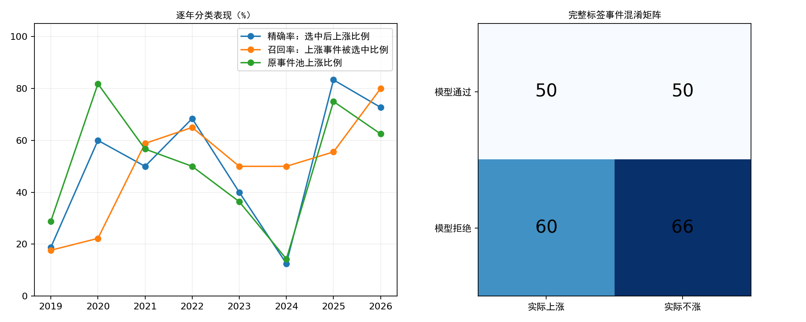

核验日期2026-10-21；行情截至2026-10-20。既有年度模型报告没有提供这组分类指标，本次用保存的逐年预测补算，不训练、不调门槛、不修改数据工程。
| 期间 | 完整标签 | 未评价 | 模型通过 | 准确率 | 精确率 | 召回率 | 原池上涨率 | 平衡准确率 |
|---|---|---|---|---|---|---|---|---|
| 2019–2026合计 | 226 | 30 | 100 | 51.33% | 50.00% | 45.45% | 48.67% | 51.18% |
| 2019–2025 | 210 | 29 | 89 | 50.00% | 47.19% | 42.00% | 47.62% | 49.64% |
| 2019 | 59 | 0 | 16 | 54.24% | 18.75% | 17.65% | 28.81% | 43.35% |
| 2020 | 33 | 0 | 10 | 24.24% | 60.00% | 22.22% | 81.82% | 27.78% |
| 2021 | 30 | 0 | 20 | 43.33% | 50.00% | 58.82% | 56.67% | 40.95% |
| 2022 | 40 | 0 | 19 | 67.50% | 68.42% | 65.00% | 50.00% | 67.50% |
| 2023 | 22 | 0 | 10 | 54.55% | 40.00% | 50.00% | 36.36% | 53.57% |
| 2024 | 14 | 4 | 8 | 42.86% | 12.50% | 50.00% | 14.29% | 45.83% |
| 2025 | 12 | 25 | 6 | 58.33% | 83.33% | 55.56% | 75.00% | 61.11% |
| 2026 | 16 | 1 | 11 | 68.75% | 72.73% | 80.00% | 62.50% | 65.00% |

合计TP=50、FP=50、TN=66、FN=60。始终预测上涨的准确率为原池上涨率48.67%；始终预测不涨的准确率为51.33%。因此单看准确率可能误导，需同时观察精确率、召回率、平衡准确率和基准。
模型拒绝事件中，仍有47.62%后来上涨；拒绝不等于确定会跌。分类指标也不能判断平均盈亏比、成交成本和账户收益。
30条未评价样本中，29条因报价缺失或指数连续段中断，1条为尚未成熟的2026-09-17酒店餐饮。尤其2025年37条中25条不可评价，12条完整样本不能代表全年。完整样本过滤可能产生非随机缺失偏差。
未评价事件中模型通过5条、拒绝25条。保留原预测不变，将未知实际涨跌作所有可能赋值，可得到完整256条样本各项指标的数学边界（不是置信区间；各指标端点不要求同时实现）：
| metric | low | high |
|---|---|---|
| accuracy | 45.31% | 57.03% |
| precision | 47.62% | 52.38% |
| recall | 37.04% | 47.83% |
即使缺失标签全部按有利于模型的情况补齐，通过事件的上涨比例上界仍为52.38%。这不修复标签缺失，只说明缺失样本对本组分类结论的最大可能影响。
事件等权；同日、临近日期不同板块不是独立样本。按相隔超过20个交易日划分20个行情簇，整簇重采样2000次，给出描述性95%分位区间：
| metric | estimate | low | high | clusters | finite_replicates |
|---|---|---|---|---|---|
| accuracy | 51.33% | 40.62% | 59.94% | 20 | 2000 |
| precision | 50.00% | 33.63% | 66.67% | 20 | 2000 |
| recall | 45.45% | 29.60% | 63.64% | 20 | 2000 |
| balanced_accuracy | 51.18% | 40.82% | 59.63% | 20 | 2000 |
| precision_lift | 1.33% | -10.86% | 9.83% | 20 | 2000 |
precision_lift为通过事件上涨率减原池上涨率，单位为比例点。区间用于说明样本不确定性，不修复研究家族事后开发偏差。跨年度合计还会混入各年市场和模型保留比例的变化，不能替代逐年比较。
逐事件预测和标签 · 未评价样本及原因 · 指标CSV · 区间CSV
OPENBLAS_NUM_THREADS=1 OMP_NUM_THREADS=1 python alpha_lab/outputs/sector_classification_audit/20261021/evaluate.py